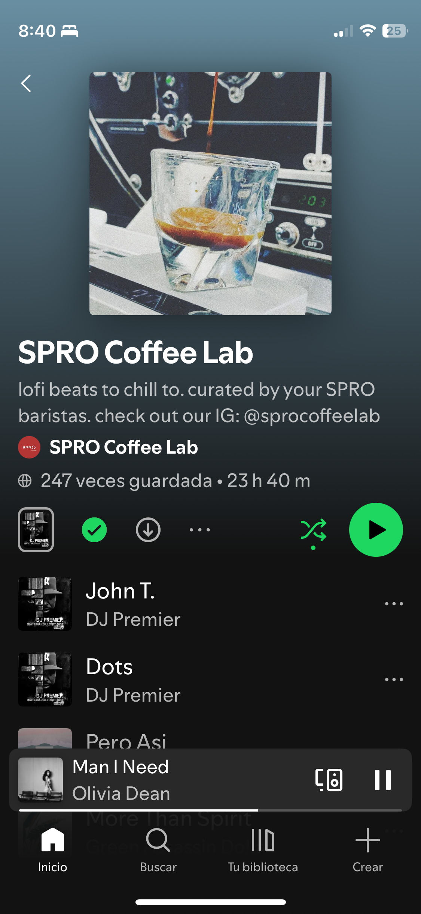

"What class do you have next?" "I just have my free." "Ugh, lucky!" This is a very common conversation that I have or overhear at my school at least 3 times a day, but maybe I should give you some context first. A free, or free period in official terms, is mandatory for all seniors at my high school. We are quite literally forced to not take a class which is just ironic considering the school prides itself on academics. We already have a 40 minute study hall period but that always seems to get canceled due to late starts, masses, or random mandatory events. Even when we do have a study hall, I never feel very productive and spend half the time trying to choose between a Cafe's lofi playlist or white noise on spotify to drown out the distracting sounds of people eating and typing.
Don't play, this is literally the best study playlist ever.
I worry about not being productive, so when I got my schedule and I looked at the gaping hole in the middle of my B-days, my jaw couldn't help but drop (and not just because my TMJ is messed up). My first class on B-days ends at 9:10, and after that I have the 40 minute study hall, then my free period, then lunch. So to put that into perspective, I have no classes from 9:10 to 12:25, which honestly seems sacrilegious against the education gods and the money going into the school. Some people basically don't even go to school because they have two free periods and don't have a class during window period. Don't you (my parents reading this) worry though, because I have yearbook during my window period and a carpool that I have to drive in the mornings, so I can't go to school late or leave it early.
You may be wondering, 'Veronica, what on earth do you do during this 1 hour and 30 minute (no) class period?' Oh my goodness thank you so much for asking, I'm sure you were so curious! My free typically goes like this:
- Go to the library and meet with my friends with the same free and the ASCs and recap the day so far.
- Check my neverending to-do list and unintentionally let out a sigh.
- Talk about college applications, the play, or a podcast.
- If it is a Friday, then upload my new blog post, just for you 🥹 💗, using cursor and tweak the design or fix any bugs.
- Ask the librarians for a charger since my computer cannot make it a full school day without dying.
- Work/Talk, it really depends on the day, but you would be surprised at the amount of work I don't do in an hour and a half if I am not locked in.
- Heat up my food in the microwave before the line gets eternally long
Everyone is...hard at work? Perchance?
I am given the opportunity to do quite literally anything during this free time, and for that I am grateful. The period shows us our true selves and our true character through the simple question that I ask myself at the beginning of every free: What should I do with my free time today?